~4 Curves~
7/21/2025
Use the Hot Keys Ctrl-R to Subdivide
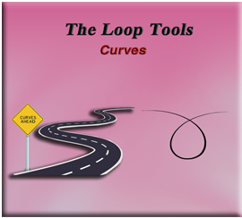What is the Curves Tool?
The curves tool is a tool inside of your Loop tools, where you can take 2 or more vertices and create a curve.
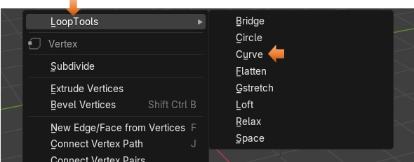Preparing the Object
To use Loop tools, you need to make sure that you have them enabled in Preferences. We have gone over this several times in the last few tutorials. But you can go here if you need to add them to your application.
To begin this demonstration, we will get rid of the cube and add a plane.
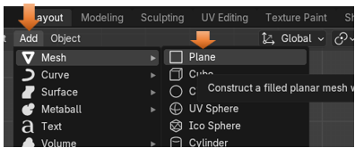Now Rotate it 90° on the X axis, so that it is standing up. Make sure you are in the Rotation section and not the Location section, or your object will go flying off of the screen, and you won’t be able to see it.
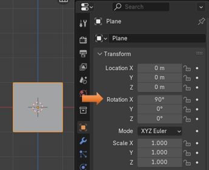Take the Scale tool and flatten it and stretch it out to sort of look like a ruler.
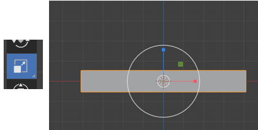Creating the Curve
Take it into Edit Mode.
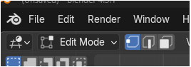Use the Hot Keys Ctrl-R to Subdivide
Hitting the Hot keys of Ctrl-R to create the Loop cuts give us better control, over the method of just right clicking and choosing to subdivide. This way we have use of the middle mouse wheel to make multiple cuts, and they will space evenly.
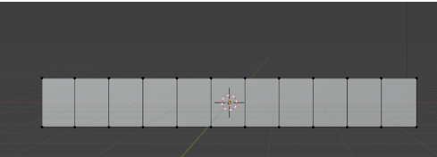
I am showing you the next image as a reminder, that we used a plane here and not a cube. So, we really don’t have any depth. Not an important point, but the image above can be deceiving.
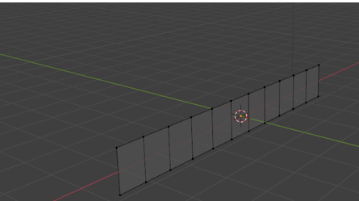Hit the 1 on the numpad and go back into front view.
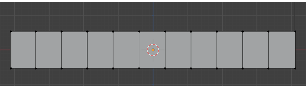We will just grab our Move Tool here and start tugging on a few of those top vertices.
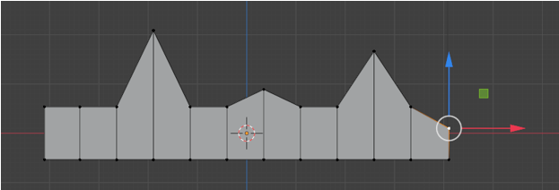Now you want to select all of the vertices that you have moved, by holding down the shift key and then just pick each one of them all up.
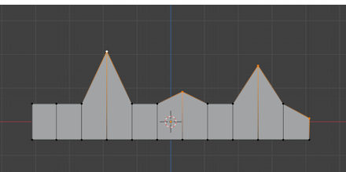Right click, and then within the Loop tool section, choose Curve.
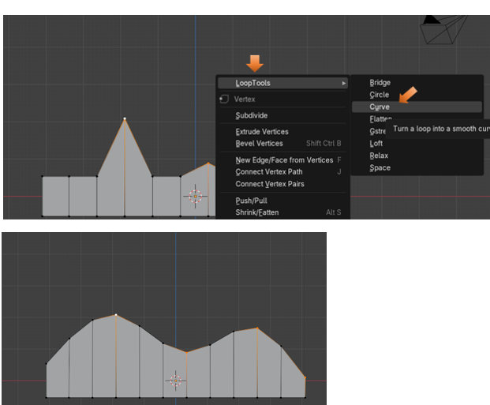Of course, the more loop cuts that you add before hitting that option to make the curve, the smoother the curve will be. We could try and add 50 to the Number of Cuts.
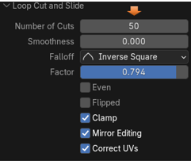
Factor Option
Here is our 50 cuts, but as you can see they are on the object just a bit uneven, leaving this space at the end of your object. If you slide the Factor slider, you will move the loop cuts along the object.
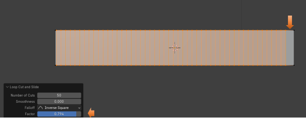Here we moved the Factor slider to make the cuts fill up that empty right side.
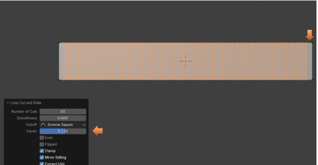 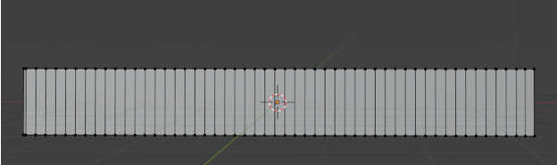 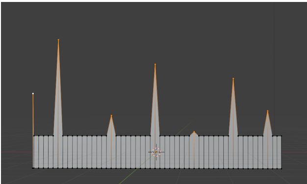
And as you can see by the image below, that the addition of those extra loop cuts enabled us to achieve a much smoother looking curve.
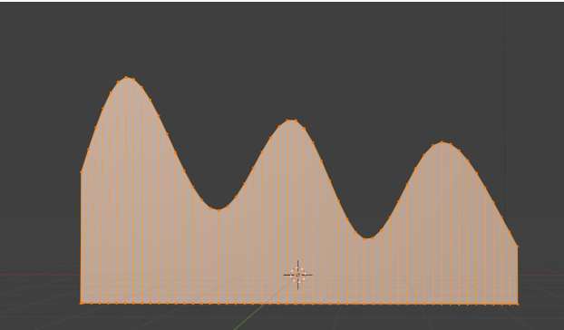And that is just about all you need to know about this tool. Now go and make some of your own curves.